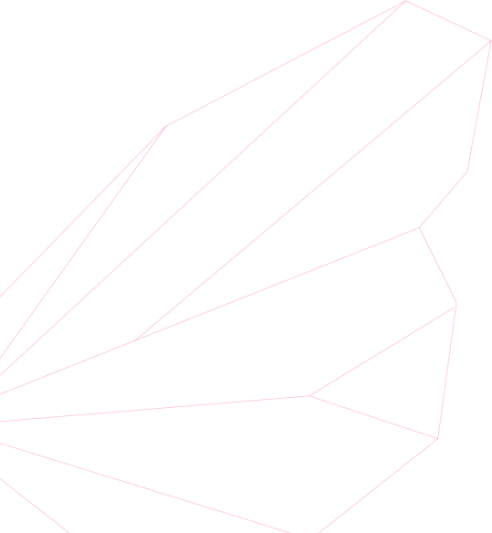
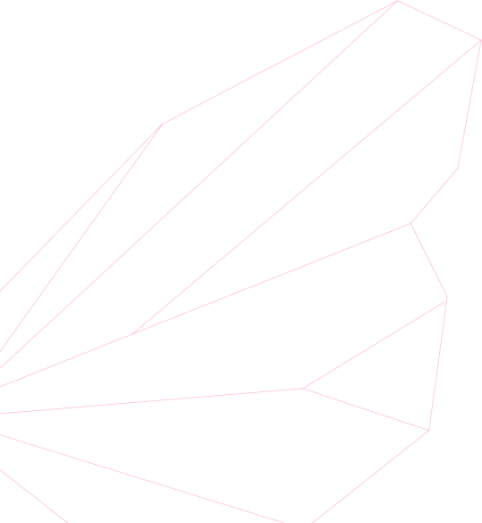

Виртуальный
Дом бабочек
Выставка бабочек
и зал виртуальной реальности

На территории «Умного дома
бабочек» будет размещена
комбинированная
экспозиция, включающая в себя выставку бабочек и зал виртуальной реальности, где с помощью специальных
технических средств можно будет ознакомиться с цифровой копией коллекции чешуекрылых.
Знакомство с уникальной коллекцией чешуекрылых может представлять интерес для школьников, студентов, жителей и
гостей нашего города.
«Умный Дом Бабочек» объединит в себе научные достижения и популяризацию науки, а в перспективе
может стать
одной из визитных карточек региона.


 

Руководство-пользователя
На территории «Умного дома
бабочек» будет размещена
комбинированная
экспозиция, включающая в себя выставку бабочек и зал виртуальной реальности, где с помощью специальных
технических средств можно будет ознакомиться с цифровой копией коллекции чешуекрылых.
Знакомство с уникальной коллекцией чешуекрылых может представлять интерес для школьников, студентов, жителей и
гостей нашего города.
«Умный Дом Бабочек» объединит в себе научные достижения и популяризацию науки, а в перспективе
может стать
одной из визитных карточек региона.